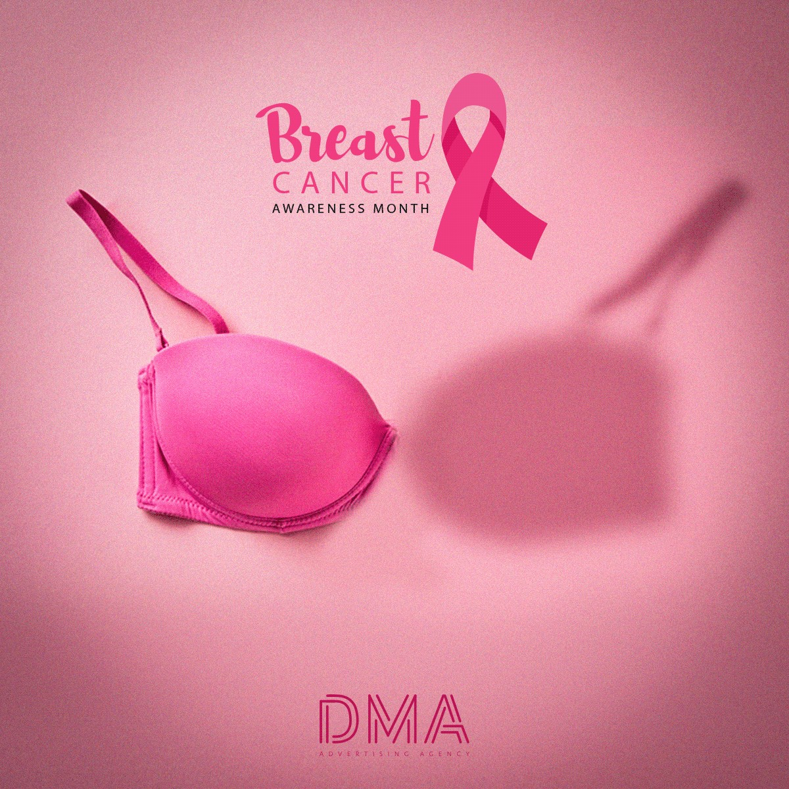

La tecnología avanza y ya no existen sólo teléfonos inteligentes, sino también indumentaria inteligente. Si todavía no escuchaste sobre esto, quedate leyendo porque va a fascinarte.
La ropa del futuro no va a ser como la conocemos hoy en día, porque la industria de la moda también está cambiando. La ropa combinada con la tecnología, además de cumplir la función principal que es vestirnos, puede mejorar nuestra calidad de vida. Así aparecen los llamados wearables, dispositivos electrónicos inteligentes que podemos usar como parte de nuestra vestimenta cotidiana. Las nuevas generaciones traen todo esto ya incorporado y mucho más.
Julián Ríos Cantú es un niño mexicano, que a sus 13 años ya creó un wearable que puede salvar vidas. A partir de la dolorosa experiencia del cáncer de mama que tuvieron su madre y su abuela, Julián decidió inventar un dispositivo que pudiera proteger a todas las mujeres de esta enfermedad: EVA Bra.
EVA Bra es un corpiño con un dispositivo electrónico no invasivo que cuenta con sensores para detectar cambios indicadores de un posible cáncer de mama. Esta información se transmite vía bluetooth con un informe preciso y automático para la paciente y su médico. Gracias a este invento, se puede hacer un seguimiento sobre la evolución o posibilidad del cáncer y tomar medidas tempranas tanto para prevenir como para curar. No es necesario usar el EVA Bra todos los días; alcanza con una hora y media a la semana para tener los datos actualizados.
Este dispositivo fue creado por Julián con la intención de salvar muchas vidas, y lo está logrando con una herramienta muy útil y accesible. Él pudo transformar una situación difícil en una posibilidad para ayudar a más personas que atraviesan lo mismo.
La creatividad, la tecnología y el corazón pueden lograr cosas increíbles. Pensamos juntxs: ¿qué otros wearables podemos crear para aportar a la humanidad?